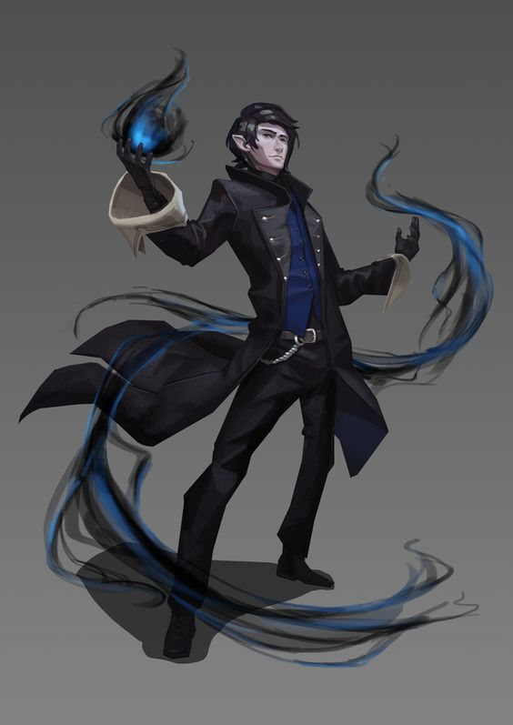

Van'lamir Saelvyer
| Van'lamir Saelvyer | ||
|---|---|---|
|  | ||
| Type: | Player Character | |
| User: | Jonathan Clay | |
| Character Information | ||
| Name: | Van'lamir Saelvyer | |
| Also Known As: |
|
|
| Creature Type: | Humanoid | |
| Race: | Half-Elf | |
| Class: | Warlock | |
| Age: | 27 | |
| Alignment: | Neutral Evil | |
| Languages: | Common; Elvish; Dwarvish; Infernal | |
| Places: | Saelvyer Manor | |
| Family: |
|
|
| Connections | Allies, Groups | |
| Profession: | Nobleman | |
| Status | ||
| Status: | Alive | |
| Cause of Death: | N/A | |
| Death Session: | N/A | |
| Stats | ||
| Level: | 1 | |
| HP | Str | Int |
| 9 | 8 | 10 |
| AC | Dex | Wis |
| 15 | 17 | 15 |
| DC | Con | Cha |
| 15 | 12 | 20 |
Van'lamir Saelvyer, is a Half-Moon Elf Fiend Warlock and a member of [group]. They are played by Jonathan Clay
Description
Appearance
Van'lamir Saelvyer is a pale half-elf with black hair. He wears a fine suit befitting his status as a member of the nobility that he had modified to provide protection similar to that of studded leather armor.
Personality
Van is manipulative, but friendly. He puts on airs of being a generous nobleman and patron of the arts, while always looking to see how people can benefit him in the future. He enjoys testing himself in battles of wits (expecially chess), though he acknowledges the he is not particularly proficient in them.
Van keeps a book on his person that he uses to keep a list of people he owes favors to, and people who owe him favors. He prefers to keep his relationship with his patron a secret for people he doesn't trust, and pass himself off as a mere dabler of magic with little training.
Biography
Background
Born at the Saelvyer Manor to two Half-Elven nobles. As a third generation Noble, Van'lamir was given a very privledged upbringing similar to many other noble children. While he didn't show all that much talent in most of his studies, he excelled in dealing with other children and adults.
As he was the second child, he grew up free from many of the expectations that were put upon his older brother by his father. Instead, Van developed a close bond with his grandfather, who had achieved the noble title that his family enjoyed. As part of his nobility, he was betrothed to a nearby noble's daughter who was around his age.
When he was twenty four, he returned to his families lands after working out a trade deal with another noble, only to find his families manor burning. After rushing in to see if he could find any survivors, he found his grandfather surrounded by the bodies of his family. His Grandfather explained that the source of their nobility was a deal he had struck with Mephistopheles when he was a teenager. The deal was that Mephisto would aid him in wooing the sole daughter of the local noble, and in exchange he and his two firstborn would faithfully serve the Archduke. As Mephisto required his service in his castle, he was required to kill his son and grandson or risk losing all he had build up over his life. After learning all of this, Van killed his grandfather with a spear, unintentionally finishing his grandfather's pact with Mephisto.
While exploring the ruined manor for a copy of his Grandfather's contract, he found it, and Mephisto in the basement. Mephisto manages to convine Van to enter into a deal with him, granting him power and maintainence of his nobility in exchange for fealty, which Van accepted, leaving the Stone Tablet with their contract next to the one his Grandfather had made.
After realizing how big of a mistake he had made in his grief, he now looks for a way out of his deal with Mephisto, and he has spend the last three years looking for such a way out.
Relationships
Grandfather
Van and his Grandfather had a good relationship and were very close up until his death. Even now, while Van hasn't forgiven his Grandfather for his actions, he understands them, and does occasionally find himself mouring his Grandfather.
Fiance
Van and his Fiance were not in love, but the two got along, and could be described as friends. After she was murdered by his Grandfather, Van was the one who informed her family of her death. He attended her funeral, and now has a rocky but respectful relationship with her family. Even three years later, her memory prevented him for trying to enter into another relationship.
Mephistopheles
Van dislike his patron, and blames him for the deaths of his family and fiance, while Mephisto finds Van to be a source of amusement and a potentially useful pawn for his future schemes. Van is currently looking for a way to break their pact, without losing his power.
Person
Describe Relationships
Character Information
Quests
Notable Quests the Character has been on
Notable Items
Notable Items the character possesses
Former Items
Notable Items the character used to possess
Abilities
Feats
- Position of Privledge
Half-Elf Abilities
- Darkvision
- Fey Ancestry
- Skill Versatility
- Perception
- Stealth
Warlock Abilites
- Pact Magic (Charisma-based)
- Expanded Spell List
- Dark One's Blessing
Spells
Cantrips- Eldritch Blast: "Vanish from my sight"
- Prestidigitation: "Shift and Obey"
- Armor of Agathys: "Frost, become my armor"
- Burning Hands: "Fire, consume my enemies"
Quotations
Trivia
- Van is 5 feet 7 inches tall.
- Van's favorite color is blue.
- Van's Eldritch Blast appears closer to black and blue smoke than crackling energy.
- Whenever Van casts a spell that involves fire, the fire's color is changed to blue.
- Overusing spells with verbal components tends to give Van a sore throat.